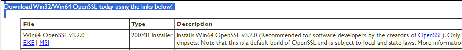
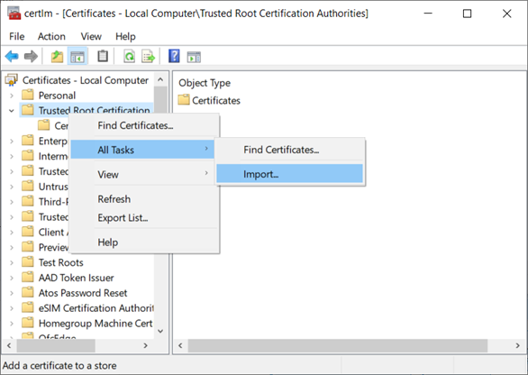
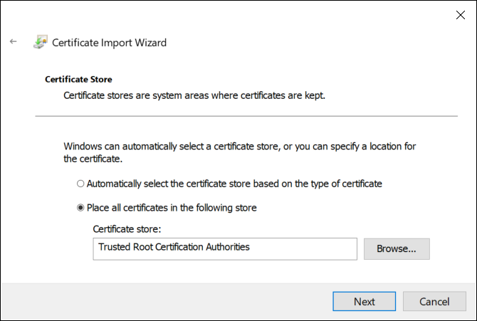

4. 为 Desigo CC 签署 ABT 站点证书
有关证书流程的更多信息，请参阅 Desigo CC 帮助。搜索OpenSSL即可获取相应信息。
1. Download Win64 OpenSSL
- Install the Win64 version of OpenSSL (1.1.1, or later) on the Desigo CC computer: https://slproweb.com/products/Win32OpenSSL.html
Note: Do not use the light version of the OpenSSL application.
2. Generate certificate signing request
- On your management station, run the Command Prompt as an administrator, go to the installed OpenSSL directory, C:\program files\OpenSSL-win64\bin, and enter the following command:
openssl req –new –newkey rsa:2048 –nodes –keyout server.key –out server.csrWhen prompted, complete the fields for your certificate, for example,
Country: CH
State: Zug
Location: Zug
Organization: Siemens
Organization unit: SI
Common name: CCServer
Email: (empty)
Challenge password: Do not enter a challenge password.
Optional company name: (empty)
- A server.csr and server.key files are created, which you can use in ABT or provide to a third party to sign.
Notice: Server.key contains the private key, is security-critical, and needs to be kept private. It should never leave the computer where Desigo CC is running. Whoever has access to that key file can impersonate Desigo CC and compromise the BACnet/SC traffic! - Copy the files server.csr to the ABT Site computer, for example, C:\CC_Cert.

例如，在较大的项目中，每个 Desigo CC 端口可能需要一个证书。命名约定可以明确区分各个证书，例如，Siemens_DesigoCC_[client_driver?_port?]
参考章节How many Desigo CC certificates are needed?
3. Export root certificate for BACnet/SC in ABT Site
- Launch ABT Site.
- Go to Building.
- Open the Certificates management task.
Certificates management - Select the BACnet/SC tab.
- Click Export root certificate (/SC).
- Click OK.
- A [ABT_project_name_current_date].crt file is created.
- Copy the created *.crt file in the directory C:\CC_Cert.
4. Sign the Desigo CC certificate signing request
- Go to Settings.
- Open the Root certificates task.
- Select the BACnet/SC certificates tab.
- Click Sign external CSR.

- Select the Desigo CC certificate signing request file server.csr and click Open.
- The Sign external CSR dialog box opens. The added file information from the OpenSSL step displays.

- Click Yes.
- The certificate requests from Desigo CC are now signed.
- A new server.p12 file is created in the folder C:\CC_Cert.
- A log entry is written in Settings > Root certificates > External CSR signing activities.
- Copy the files *.cet, *.cer, *.csr, *.p12 to the Desigo CC computer into the folder C:\program files\OpenSSL-win64\bin.
5. Validate the certificate in Desigo CC
验证 Desigo CC 计算机上的证书并创建 server.pfx文件，执行以下操作：
- Go to the OpenSSL directory and enter the following command to generate a server.pfx file from the server.cer and server.key.
openssl pkcs12 –export –in server.cer –inkey server.key –out server.pfx - Click <Enter>.
- Enter a password.
Note: This password is used when the certificate on the Desigo CC computer is imported and when the driver port is created. - Verify the password.
- Click <Enter>.
- The server.pfx file is ready to use.
6. Import the BACnet/SC root certificate into the Desigo CC computer
- In Windows Search, enter Manage computer certificates (not manage user certificates), and run the application.
- The Microsoft Management Console Certificates dialog box displays.
- In the Certificates tree, right-click Trusted Root Certification Authorities, and select All Tasks > Import.

- The Welcome to the Certificate Import Wizard dialog box displays.

- Click Next.
- The File to Import dialog box displays.
- Click Browse and select the root (CA) [ABT_project_name_current_date].crt certificate from ABT Site.
- Click Open, and then click Next.
- The Certificate Store dialog displays.

- Accept the default store location and click Next.
- Click Finish, and then click OK.
- The root certificate [ABT_project_name_current_date] is available in the folder Trusted Root Certification Authorities > Certificates.
7. Import the BACnet/SC client certificate into the Desigo CC computer
- In Windows Search, enter Manage computer certificates (not manage user certificates), and run the application.
- The Microsoft Management Console Certificates dialog box displays.
- In the Certificates tree, right-click Personal, and select All Tasks > Import.

- The Welcome to the Certificate Import Wizard dialog box displays.
- Click Next.
- The File to Import dialog box displays.
- Click Browse and select a host certificate (file type server.pfx).

- Click Open, and then click Next.
- The Private key protection dialog displays.

- Do the following:
- Enter the password for this certificate.
- Select Mark this key as exportable, and then click Next.
Note: Do not enable strong private key protection. If your security policy automatically enables it, you must modify the Windows service that runs the Desigo CC services to run in a user account with administrative rights or privileges. - The Certificate Store dialog box displays.
- Accept the default store, and then click Next.
- The Completing the Certificate Import Wizard dialog box displays.
- Click Finish, and then click OK.
- The two certificates you imported are ready to be used when you configure the BT BACnet Stack.
- In the OpenSSL directory, delete or secure the server.key.